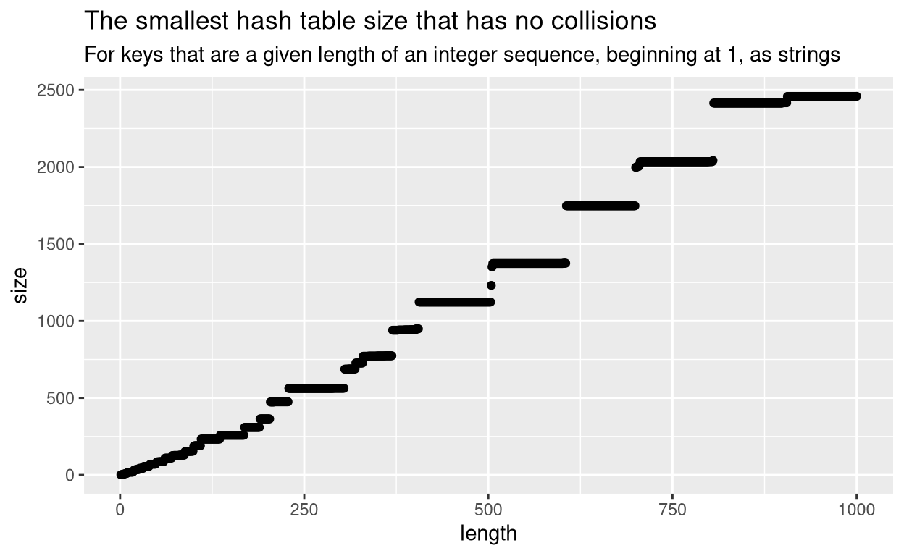

Glitches in hashed environments in R
If you want an R function to modify one of its arguments, then you must pass it an environment (a special kind of list)1. Otherwise, if you pass it anything else (say, an ordinary list), it will be copied, then the copy will be modified, and the the copy will be deleted when the function return. The effect will be nothing at all. Pure functional programming. Its a bit like asking a magician to put money into your wallet. They will convince you that they put money into it, but they didnt really.
put_money_into_my_wallet <- function(x) {
x[["money"]] <- 1000000
}
# Create an empty wallet. Don't give a full wallet to a magician.
wallet <- list(money = 0)
wallet$money
[1] 0# Invite them to put money into your wallet. It sure looks as though they did!
put_money_into_my_wallet(wallet)
# Uh-oh, where did the money go?
wallet$money
[1] 0Whereas if you pass an environment, any changes that the function makes to the contents of the environment will remain after the function is over.
# Outwit the magician by giving them a trick wallet.
wallet_2 <- list2env(wallet)
wallet_2$money
[1] 0# Invite them to put money into your trick wallet.
put_money_into_my_wallet(wallet_2)
# Ahracadabra! The money is still in the wallet. Run for it.
wallet_2$money
[1] 1e+06When creating a new environment, you can choose to hash its keys (the
names of the objects inside). Hashing slightly slows down the insertion
of new keys, for the sake of drastically quickening lookups.
x[["new_key"]] <- some_value is slightly slower, but
x[["existing_key"]] is much, much quicker, especially when
there are very many keys. Hashing works by compressing each key into a
much smaller value, so that its quicker to compare the hashed keys than
the original keys, when youre searching for a particular key.
The list2env() function allows you to choose how many
different hashes will be available, by setting the size
parameter. Suppose you only need the environment to hold five values,
then you only need five different hashes, so you do something like
list2env(my_list, size = 5).
my_list <- as.list(LETTERS[1:5])
names(my_list) <- as.character(1:5)
my_list
$`1`
[1] "A"
$`2`
[1] "B"
$`3`
[1] "C"
$`4`
[1] "D"
$`5`
[1] "E"my_env <- list2env(my_list, hash = TRUE, size = 5)
Did R do what you asked? You can call env.profile() to
find out.
env.profile(my_env)
$size
[1] 6
$nchains
[1] 5
$counts
[1] 0 1 1 1 1 1No, R didnt do what you asked. It grew the size a little bit, just in case you need to create more objects soon. Theres no way to control this, because its hardcoded in C++ that, when the number of objects in the environment is more than 85% of the number of hashes available, then the number of hashes available will be increased by 20%. In this example we had five original hashes, and now we have six available.
Which is the first glitch. Why is the default size
max(29L, length(x))? Neither of those options will be
correct.
If you use the default size, then you had better have 24 or fewer objects to put into the environment. 25 would trigger a resize (what a waste of time), because 25 is less than 29 (so R will create an environment of size 29), but more than 85% of 29 (so R will immediately resize the environment to 120% of 29, which is 34 (it rounds down more of that later).
my_list <- as.list(1:25)
names(my_list) <- as.character(1:25)
my_env <- list2env(my_list, hash = TRUE)
env.profile(my_env)
$size
[1] 34
$nchains
[1] 17
$counts
[1] 1 1 1 1 0 0 0 0 0 0 0 0 0 0 0 1 2 2 2 2 2 2 2 2 1 1 0 0 0 0 0 0 1
[34] 1The same goes for length(x), obviously x
has more items in it than 85% of length(x). It has 100%.
ceiling(length(x) / 0.85) would avoid resizing the
environment immediately.
my_list <- as.list(1:30)
names(my_list) <- as.character(1:30)
my_env <- list2env(my_list, hash = TRUE)
env.profile(my_env) # The size is 36, which is bigger than length(my_list).
$size
[1] 36
$nchains
[1] 27
$counts
[1] 1 0 0 0 1 1 1 1 1 1 1 1 1 2 1 1 1 1 1 1 2 2 1 1 1 1 1 1 1 1 0 0 0
[34] 0 0 0# This time, calculate a size that won't be increased.
size <- ceiling(length(my_list) / 0.85)
size # Surprise! It's 36.
[1] 36my_env <- list2env(my_list, hash = TRUE, size = size)
env.profile(my_env) # The size is unchanged, so no time was wasted resizing.
$size
[1] 36
$nchains
[1] 30
$counts
[1] 1 0 0 0 1 1 1 1 1 1 1 1 1 2 1 1 1 1 1 1 2 2 1 1 1 1 1 1 1 1 0 0 0
[34] 0 0 0So we can avoid an immediate resize. The previous example used a list of length 30 so that the default size of 29 wouldnt be used. But we can create a much more minimal example of avoiding resizes if we use a list of length 1, and tell R to create room for 2.
my_list <- list("1" = 1)
size <- ceiling(length(my_list) / 0.85) # It's 2
my_env <- list2env(my_list, hash = TRUE, size = size)
env.profile(my_env)
$size
[1] 2
$nchains
[1] 1
$counts
[1] 0 1And thats what R would have done anyway, right? It would have resized to 2, because 1 is already 100% of the length of 1.
my_list <- list("1" = 1)
my_env <- list2env(my_list, hash = TRUE, size = length(my_list))
env.profile(my_env)
$size
[1] 1
$nchains
[1] 1
$counts
[1] 1Nope, this time R didnt resize, even though the number of objects (1) was way more than 85% of the size (also 1).
I did the maths, and environments that are initialised to a size less than 5 never grow. Not ever.
my_list <- as.list(1:100)
names(my_list) <- 1:100
my_env <- list2env(my_list, hash = TRUE, size = 1)
env.profile(my_env) # the size is still 1, even though there are 100 objects
$size
[1] 1
$nchains
[1] 1
$counts
[1] 100How can 100 objects be stored in an environment of size 1? Because they all share the same hash, R doesnt associate that hash with just one object, it associates that hash with an ordinary (unhashed) list of all 100 objects. When it comes to looking up a value in the environment, R doesnt benefit from the hashing at all, because the hash only takes it to that ordinary list of objects, which then has to be searched in the usual way, slowly. Try this with a million objects, and youll notice the delay.
But why 5? Why do environments grow when they are size 5, but not when they are size 4? The answer is in the C++ code that creates a new, larger hash table.
new_table = R_NewHashTable((int)(HASHSIZE(table) * HASHTABLEGROWTHRATE));An equivalent R expression would be
new_table = new_hash_table(as.integer(HASHSIZE(table) * HASHTABLEGROWTHRATE))We can think this through in our heads. The
HASHTABLEGROWTHRATE is hardcoded to 1.2, and
HASHSIZE(table) is the size that we ask for. So lets do
the maths.
HASHSIZE_table <- 1 # What we asked for with list2env(my_list, size = 1)
HASHTABLEGROWTHRATE <- 1.2 # Hardcoded
as.integer(HASHSIZE_table * HASHTABLEGROWTHRATE) # The size of the new table
[1] 1Well shucks, the table will be resized from 1 to still 1. And the
same for sizes 2 to 4, because as.integer() truncates the
new size down to the integer below. Only with a table that is size 5 or
more will the new size be truncated to a larger size than was started
with.
I reported this bug to the R-devel
mailing list, and nobody cared. Fair enough, because no package on
CRAN uses the size argument anyway, so all the hash tables
will be initialised to at least 29, and the bug will never arise.
Hashing such small tables isnt worth it anyway, because lookups perform
slower than for the unhashed equivalent.
Im not finished, though.
Lets revisit an earlier example, where a list of 30 objects was put into a hashed environment, and R resized the environment to 36. If there are 30 objects, and space for 36, then surely each object will have its own hash, and none will have to share (like they did when 100 objects shared a single hash).
my_list <- as.list(1:30)
names(my_list) <- as.character(1:30)
my_env <- list2env(my_list, hash = TRUE)
env.profile(my_env) # The size is 36, which is bigger than length(my_list).
$size
[1] 36
$nchains
[1] 27
$counts
[1] 1 0 0 0 1 1 1 1 1 1 1 1 1 2 1 1 1 1 1 1 2 2 1 1 1 1 1 1 1 1 0 0 0
[34] 0 0 0The $counts result above shows how many objects share
each hash. There are lots of singletons, some empty positions, as we
expect, and yet whooops three pairs of objects that have to share a
hash.
It turns out that this is just a hazard of hashing. In fact its the point of hashing. When compressing many keys into a small space, there are bound to be collisions of keys that are compressed into the same space. Ideally, a hash algorithm would ensure that for n keys with at least n available hashes, no key would share a hash, but in practice they sometimes do. The performance of lookups in hash tables is still better than named lists, notwithstanding a few collisions, and it isnt practical to guess a size that is adequate to avoid collisions. I plotted the optimum no-collision size for lists of up to 1000 objects, and the only pattern is that, for larger number of objects, you need a proportionately even larger hash table to avoid collisions. But exactly how much larger seems unpredictable.

Or perhaps the R developers chose a poor hash algorithm.
This one may or may not be a glitch. Heres the implementation in C++.
/*----------------------------------------------------------------------
String Hashing
This is taken from the second edition of the "Dragon Book" by
Aho, Ullman and Sethi.
*/
/* was extern: used in this file and names.c (for the symbol table).
This hash function seems to work well enough for symbol tables,
and hash tables get saved as part of environments so changing it
is a major decision.
*/
int attribute_hidden R_Newhashpjw(const char *s)
{
char *p;
unsigned h = 0, g;
for (p = (char *) s; *p; p++) {
h = (h << 4) + (*p);
if ((g = h & 0xf0000000) != 0) {
h = h ^ (g >> 24);
h = h ^ g;
}
}
return h;
}That comment well enough raised my suspicions, so I did some digging.
Was it really taken from the second edition of the
Dragon Book, published in 2006? git blame shows that
the comment was written in 1999, seven years before the second edition
of the Dragon Book was published. Maybe they meant a different book.
Is the implementation correct? I looked up pjw, because that seemed a clue to the origin of the algorithm. The PJW hash function has a page on Wikipedia, with an example implementation that isnt quite the same, and according to StackExchange, the error might have been copied from a textbook.
Is PJW a good algorithm? Its probably fine, although someone considered replacing it with one called DJB2, and someone else chose not to. The same source that spilled the beans about incorrect implementations of PJW also argues that a good-enough hash function should be left alone.
An upcoming version of R, 4.2.0, will include an experimental implementation of hash tables that arent environments.
size parameter has no default, and is documented
as a mere hint.If you see mistakes or want to suggest changes, please create an issue on the source repository.
Text and figures are licensed under Creative Commons Attribution CC BY 4.0. Source code is available at https://github.com/nacnudus/duncangarmonsway, unless otherwise noted. The figures that have been reused from other sources don't fall under this license and can be recognized by a note in their caption: "Figure from ...".
For attribution, please cite this work as
Garmonsway (2022, April 11). Duncan Garmonsway: Hashing it out. Retrieved from https://nacnudus.github.io/duncangarmonsway/posts/2022-04-11-hashing-it-out/
BibTeX citation
@misc{garmonsway2022hashing,
author = {Garmonsway, Duncan},
title = {Duncan Garmonsway: Hashing it out},
url = {https://nacnudus.github.io/duncangarmonsway/posts/2022-04-11-hashing-it-out/},
year = {2022}
}